DAY 2 / 3BLOCK 0 · 開場
把你會的事 ——
變成一句話的 Skill。
變成一句話的 Skill。
SO NICE · AI 工作流導入 ｜ Day 2 / 3
講師 余文皓
匯流顧問有限公司
2026 / 06 / 29 · 中和
1
SO NICE · AI 工作流導入
BLOCK 0開場 · 回顧
昨天你做出來了 ——
今天讓它自己重跑。
今天讓它自己重跑。
開場 · 回顧 · 約 18 MIN
2
BLOCK 0今天 · 三件大事
昨天學會叫它做事 ——
今天把重活 變一句話。
今天把重活 變一句話。
以前 · 手工做
今天 · 一句話的 Skill
查競品、追趨勢
查一整天，查完就散
查一整天，查完就散
→
[研究] ＋ [歸檔]
自動查 · 重點進知識庫
自動查 · 重點進知識庫
家喻 · Karen 的需求
做提案 deck
自己一頁頁排版、找圖
自己一頁頁排版、找圖
→
Claude Design
研究 → 自動生 on-brand deck
研究 → 自動生 on-brand deck
家喻 的需求
每期的數據報表
手工整併、算、比去年
手工整併、算、比去年
→
數據報表 Skill
一句話 · 自己整併＋解讀
一句話 · 自己整併＋解讀
Elaine · Elena · 集鍵 · Karen · 靖宜 的需求
3
BLOCK 0 · 把重活變一句話
BLOCK 0 · 回顧D1 的 3 個作業
回來之前 —— 你的 3 個作業。
01 · 每天
開工 · 收工 · WAM
每天「開工」排今天、「收工」收尾；週五跑「結算本週」。
這兩個週五：6/19、6/26。
這兩個週五：6/19、6/26。
→ 節奏跑起來了嗎
02 · 下次開會
一場會議一條龍
會前讓 Claude 做會議手冊；會後產會議記錄、放進 FLUX。
→ D2 帶來：你的手冊 + 紀錄
03 · 約 1–2 HR
數據 → 完整簡報
挑一份真實業績報表：整併 → 李總三問 → 出一份完整簡報。
→ D2 帶來：試跑成果 + 真實簡報
沒做完
沒關係 —— 今天的能力會接著帶你做。卡住的下課找我，不佔大家時間。
4
BLOCK 0 · D1 作業回顧
BLOCK 0 · 開始前30 秒確認環境
開始動手前 —— 確認 vault 活著。
✅ 只有「點」= 好了
EXPLORER
FLUX-STANDARD-SONICE
▸ .claude
▸ .obsidian
▸ Atlas
CLAUDE.md
skill 都在、直接開始。
⚠️ 只有「底線」= 要修
EXPLORER
FLUX-STANDARD-SONICE
▸ _claude
▸ _obsidian
▸ Atlas
CLAUDE.md
skill 卡在底線、Claude 看不到。
⚠️ 點＋底線都有 = 也要修
EXPLORER
FLUX-STANDARD-SONICE
▸ .claude (空的)
▸ _claude (skill 在這)
▸ _obsidian
CLAUDE.md
那個「點」是 Claude 自動建的空殼、別被騙。
要修的話（後兩種）—— 在 vault 開 Claude、貼這句
> 請讀取 Inbox/SETUP-CLAUDE.md 並依步驟執行
同一句 —— Claude 自己分辨：改名 / 清掉空殼 / 驗證收尾。
沒擺對 = 不是官方建議的設定，skill 不會自動觸發 —— 先擺對、今天才順。
三格都不像？開錯資料夾、找我。
5
BLOCK 0 · 開始前 · 環境確認
BLOCK 0 → BLOCK 1第一道主菜 · 知識/情報
做品牌企劃、追競品趨勢 ——
查一整天，查完就散了。
查一整天，查完就散了。
今天第一件事 —— 先讓 AI 幫你把功課做完，再讓它變成不會消失的資產。
6
BLOCK 1 · 知識/情報
BLOCK 1 · 知識/情報研究做完，留得住嗎
你上個月研究的競品 ——
現在還找得到嗎？
現在還找得到嗎？
同事
下季要做品牌聯名，你之前研究的競品比較，給我參考一下？
你
等等…我找一下，那份…存哪了…
你（心裡）
該不會…根本沒存吧。
研究做了，沒存進對的地方 —— 下次又得從頭查一遍。
7
BLOCK 1 · 研究找不到
BLOCK 1 · 知識/情報Google 也進化了
查「N.ONE 流行元素」——
Google 連 AI 都幫你整理好了。
Google 連 AI 都幫你整理好了。
不再是一堆藍色連結 —— AI 摘要直接整合、條列、附來源，連競品流行元素都幫你分析了。
但這份整理 —— 關掉這個分頁，它就什麼都不記得。下次再查，從頭再來一次。
8
BLOCK 1 · Google 也留不住
BLOCK 1 · 知識/情報有更好的選擇
Google 到查完就停了 ——
我們現在有更好的。
我們現在有更好的。
Google 到此為止
✗ 查完關掉 —— 什麼都沒留下
✗ 誰查都一樣 —— 不認得你、不懂 SO NICE
✗ 每次從零 —— 不會越查越聰明
它幫你查 —— 但只到「查」為止。
更好的 = 我做的 skill · [研究]（knowledge-keeper）
把「查 → 整合 → 存」整套教給 Claude —— 一句話 [研究]，它全做完。
查完自動留進你的庫，下次先翻你存過的。
你存越多 —— 它越懂 SO NICE。
Google 是工具，幫你查；[研究] 是你教出來的助理 —— 查完幫你留、還越來越懂你。
9
BLOCK 1 · [研究] 是一個 Skill
BLOCK 1 · 動手 ①[研究] 競品＋趨勢 · 4 MIN
動手 ① —— 打一句 [研究]。
照貼這段給 Claude
> [研究] 我在做 FW2026 商品企劃，想先抓一下競品方向：
· MOMA、iROO、N.ONE 這一季有沒有共同的流行元素？（各看 3-5 個來源）
· 韓國這一季版型、顏色在流行什麼？
· 整理好放進 Inbox 給我。
看它自己做了什麼
· 先翻你存過的 → 再補外部
· 讀完多來源、整合成報告
· 進 Inbox、每個重點可追溯
· 先翻你存過的 → 再補外部
· 讀完多來源、整合成報告
· 進 Inbox、每個重點可追溯
04:00
它把功課做完 —— 判斷還是你的。
10
BLOCK 1 · 動手 · [研究]
BLOCK 1 · 知識/情報跑完長這樣
跑完長這樣 —— 一份報告躺在 Inbox。
Inbox/女裝競品與日韓趨勢-2026FW.md · 49 條來源
# 女裝市場掃描：競品 ＋ 日韓趨勢（FW2026）
## 競品在主打什麼（SS 現況）
- MOMA：場景化命名、顯瘦泡泡袖、全年不打折 [來源]
- iROO：GODDESS EDIT 女神日常、繭型洋裝 [來源]
- N.ONE：靜謐碰撞、光澤寬褲、價格略低 [來源]
## 跨市場共振（2 市場以上才算趨勢）
- 蕾絲＋荷葉邊：台日韓三方全中 ★★★ [來源]
- 寬版下半身：日韓強、台灣競品還沒跟 [來源]
- FW 主色：深酒紅 ↔ 深茄紫 ★★★ [預測]
不是 10 個分頁 —— 是一份讀完 49 條來源、比好、標好出處的報告。
11
BLOCK 1 · 產出① 報告
BLOCK 1 · 知識/情報研究怎麼存
存檔誰都會 ——
拆成知識卡才是真本事。
拆成知識卡才是真本事。
Sources · 報告原件
整份研究留著 —— 之後要追細節、看出處，回來查得到。
存個檔案 —— 這個誰都會。
Dots · 知識卡
把報告拆成一張張卡 —— 一卡一個重點，還標出哪個最重要。
這個 —— 才叫知識管理。
第二種 —— 以前難到幾乎沒人做得到。為什麼？
12
BLOCK 1 · 兩種存法
BLOCK 1 · 知識/情報以前有多難
把報告拆成知識卡 ——
以前是一門專業。
以前是一門專業。
自己一張張整理 —— 要做的事
① 讀懂整份、挑出真正該留的重點
② 每個重點拆成一張獨立的卡
③ 判斷每張多重要（評級）
④ 分類、再找出卡跟卡的關聯
⑤ 還得長期持續，新知識接上舊的
一份報告認真整理 ＝ 半天 · 還得先學方法、靠紀律

這套方法有多強、又多難
德國學者盧曼 —— 一輩子九萬張卡、寫出 70 多本書。
強到有專書教《卡片盒筆記》—— 但學會它，得花功夫。
所以一般人的知識 —— 永遠是一堆打不開的死檔案。
13
BLOCK 1 · 以前有多難
BLOCK 1 · 知識/情報現在
現在 —— 一句 [歸檔]，30 秒做完。
AI 自動做完 —— 剛剛那 5 件
挑出重點 · 拆成一張張獨立卡
評每張重要性 · 分類 · 連好關聯
評每張重要性 · 分類 · 連好關聯
你只說一句 [歸檔] —— 其它它全包。
以前
半天
↓
現在
30 秒
以前是盧曼的本事 —— 現在是你的一句話。
14
BLOCK 1 · AI 一句話翻轉
BLOCK 1 · 知識/情報拆成卡之後
拆成卡之後 —— 一張到處用，
還會連成網。
還會連成網。
一卡多用 · 重複調
你剛存的「寬版下半身是日韓共振但台灣女裝缺口」卡 ——
· FW 選品會議 → 要不要押寬版單品
· 做提案 deck → 當「差異化機會」放
· 明年同期 → 回來對帳「台灣跟上沒」
· 做提案 deck → 當「差異化機會」放
· 明年同期 → 回來對帳「台灣跟上沒」
不用每次翻整份報告 —— 一張卡直接調。
卡連卡 · 長成判斷網
它自動連到你另外幾張卡 —— 「三競品定位對照」「強肩回歸」「跨市場共振」。
越存越多 → 一張會長大的商品判斷網。
這套叫卡片盒筆記法 —— 你存的不是檔案，是一張會長大的判斷網。
15
BLOCK 1 · 拆成卡強在哪
BLOCK 1 · 知識/情報它就在你 vault 裡
而這一切 —— 就在你 vault 裡，自動好。
EXPLORER · 你的 vault
▸ Inbox 暫時
▸ Cockpit 每天
▸ Calendar
▸ efforts
▾ Atlas ← 永久知識庫
▸ Dots 知識卡
▸ Sources 來源
▸ Maps 索引
跟 Inbox、Cockpit 並排的一個資料夾 —— 已經幫你開好、分好格。
剛剛那些拆卡、評重要性、分類、連結 —— AI 自動放進對的格子，你不用當圖書管理員。
不用裝、不用搬、不用自己分 —— 你只要說一句 [歸檔]。
16
BLOCK 1 · Atlas 在 vault
BLOCK 1 · 動手 ②[歸檔] 進 Atlas · 3 MIN
動手 ② —— 打一句 [歸檔]。
[研究] 把功課做完了 —— 再給一個暗號 [歸檔]，把報告拆成一張張會連的卡。
接著貼這段
> [歸檔] 把剛剛那份競品／趨勢研究的重點，整理進我的 Atlas —— 一張卡一個重點、標好出處。
看它自己做了什麼
· 拆成幾張知識卡（一卡一重點）
· 自動歸類、放進 Atlas
· 以後 [研究] 會自己翻到它
· 拆成幾張知識卡（一卡一重點）
· 自動歸類、放進 Atlas
· 以後 [研究] 會自己翻到它
03:00
存的是重點，不是原始資料。
17
BLOCK 1 · 動手 · [歸檔]
BLOCK 1 · 知識/情報歸檔完長這樣
歸檔完，打開你剛存的卡 —— 長這樣。
Atlas/Dots/Statements/
成熟蕾絲是 FW2026…共振訊號.md
---
up: [[Business Models MOC]]
collection: [[Statements]]
related:
- [[FW2026 主色收斂酒紅-茄紫]]
- [[趨勢成立看跨市場共振]]
- [[企劃落地 runway 訊號保守化]]
source: [[女裝市場掃描…FW2026]]
---
成熟蕾絲+透膚是 FW2026 唯一
「三市場+三競品」全中 ★★★
一卡一重點
一句結論 + 歸到 MOC + 連回來源 —— AI 自動填好。
一句結論 + 歸到 MOC + 連回來源 —— AI 自動填好。
卡片自動連 → 判斷網
related: 自動連到你另外 3 張卡 —— 不是一堆躺著的檔案。
related: 自動連到你另外 3 張卡 —— 不是一堆躺著的檔案。
這次 [歸檔]：一份報告 → 9 張卡，自動連成你的判斷網。
18
BLOCK 1 · 產出② 卡片
BLOCK 1 · 知識/情報打開 Obsidian 看
打開 Obsidian —— 卡連成判斷網。
剛 [歸檔] 進 Atlas 的卡，打開 Obsidian 就看得到 —— 一篇女裝研究、拆成連起來的卡 ↓
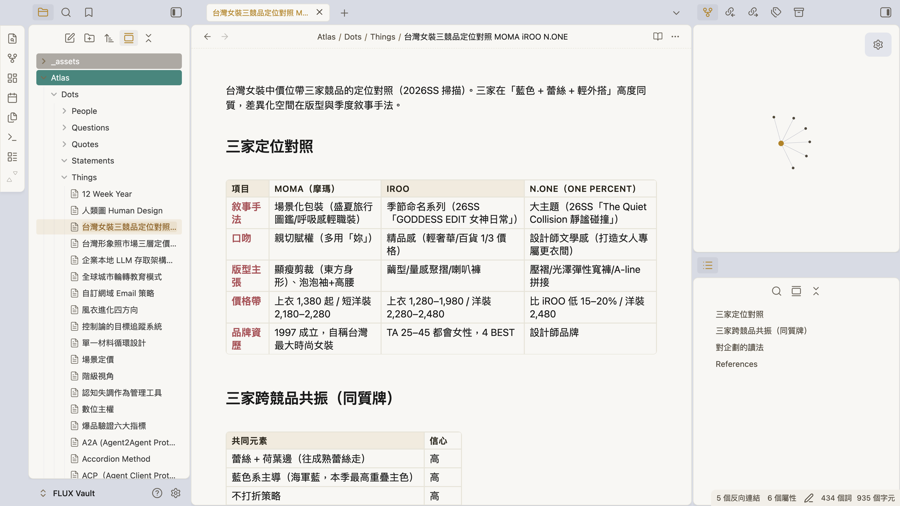
不是一堆躺著的檔案 —— 是 查得回來、互相連結 的判斷網。
19
BLOCK 1 · 打開 Obsidian 看
BLOCK 1 · 收尾越用越聰明
越歸檔，越聰明 ——
它更懂你手上有什麼。
它更懂你手上有什麼。
[研究] 查
→
[歸檔] 拆成卡
→
判斷網越來越大
↻
下次決策更快
不重複造輪子
比過競品 A → 下次比 B，它先說：「你已經有競品分析框架卡了。」
比過競品 A → 下次比 B，它先說：「你已經有競品分析框架卡了。」
看得見的累積
每次 [歸檔] 在 log.md 記一筆 —— 半年後翻，看自己做了多少功課。
每次 [歸檔] 在 log.md 記一筆 —— 半年後翻，看自己做了多少功課。
Atlas 越用越聰明 —— 不是越用越雜。
20
BLOCK 1 · 飛輪 · 收尾
BLOCK 1 · 換你的題目綜合練習 · 8 MIN
現在 —— 換你自己的題目跑一次。
三步
① 挑一個你自己的問題
② 打 [研究] —— 它查、整合進 Inbox
③ 打 [歸檔] —— 重點進 Atlas
沒想法？挑一個
· 競品最近在打什麼
· 哪些流行趨勢要跟
· 下一季選什麼品
· 某個客群想要什麼
· 定價帶怎麼抓
· 哪些流行趨勢要跟
· 下一季選什麼品
· 某個客群想要什麼
· 定價帶怎麼抓
08:00
跑完打開 Atlas —— 你的判斷網多了幾張卡。連「查資料」都變成一句話的 skill —— 這就是你的開始。
21
BLOCK 1 · 綜合練習
BLOCK 1 → BLOCK 2第二道主菜 · Claude Design
同一份女裝研究 —— 留 Atlas 長知識，
還能變一份 提案 deck。
還能變一份 提案 deck。
你剛剛 [研究] ＋ [歸檔] 的那份研究 —— 接著，把它搬上「櫥窗」、變成能提案的東西。
22
BLOCK 2 · Claude Design
BLOCK 2 · Claude Design同一個 Claude、換個視覺面
把研究擺上「櫥窗」的工具
—— Claude Design。
—— Claude Design。
不是新軟體 —— 同一個 Claude 的視覺面（claude.ai/design）。你餵它兩樣，它把研究 render 成提案 deck。
輸入① 設計稿 · 這份專用
這一份的內容 —— 給誰看、故事線
用前面 [研究] 的那份報告、寫成 prompt.md
輸入② design system · 全員共用
跨所有份的品牌 —— 色 / 字 / 版型
建一次、之後每份 deck 都重用
→
櫥窗 · Claude Design
照稿 render
只是工具
↓
提案 deck
兩個輸入裡，真功夫只在 設計稿（你想內容） —— design system 公司現成的、Design 只負責變好看。
23
BLOCK 2 · Claude Design 是什麼 + 兩種輸入
BLOCK 2 · Claude Design中間要轉一手
研究不能直接丟 ——
中間要先變 設計稿。
中間要先變 設計稿。
研究是「內容」、deck 是「一頁一頁的設計」—— Claude Design 照設計稿做，不會幫你決定提案長怎樣。
你有的
研究報告.md
一坨內容
→
你要做的
prompt.md · 設計稿
頁數 / 標題 / 視覺 / 風格
→
Claude Design
提案 deck
照稿生成
功夫在 中間那手 —— 設計稿對了、deck 就對。
24
BLOCK 2 · 為什麼轉一手
BLOCK 2 · 設計稿想的順序
設計稿 —— 先想，最後才排版。
① 目的 + 對象
給誰看？要他做什麼決定 / 行動？—— 先定這個（例：給主管、批 FW 選品方向）
② 故事線
怎麼鋪陳最有說服力？結論先講 / 問題→方案… 最關鍵、最常被跳過
③ 逐頁排版
照故事線：每頁 標題 + 一個重點 + 該不該配視覺 —— 不擠也不空（頁數從故事線長出來）
④ 設計系統
風格 / 配色 / 字級 —— 一句話寫進 prompt（簡潔商務、底白、主色 #111、數字大）
25
BLOCK 2 · 設計稿 · 想的順序
BLOCK 2 · 示範＋動手看範例 → 換你寫 prompt.md
設計稿（prompt.md）—— 怎麼問、長怎樣。
你照貼這段 → 叫它寫出右邊（{ } 自己填）
> 讀 @你的女裝研究報告，幫我寫一份給 Claude Design 用的提案設計稿、存成 prompt.md。先想清楚再排版，照這順序填：
① 目的 + 對象：{給誰看、要他做什麼決定}
② 故事線：怎麼講最有說服力？（你依研究判斷）
③ 照故事線想要幾頁：每頁標題 + 內容重點 + 視覺化方案
④ 設計系統：簡潔商務、數字放大；底 #FFFFFF ／ 主色 你的品牌色（SO NICE #111） ／ 字 #16181D
把 ①②③④ 寫成完整 prompt.md 給我看，先別生 deck —— 我拿去 Claude Design 生。
→
Claude Code
讀研究、寫出
讀研究、寫出
設計稿 prompt.md（產出）
# FW2026 女裝商品企劃提案
目的：給主管 → 批 FW 選品方向 + Q3 備貨色票
故事線：一個判準（跨市場共振）→ 三市場矩陣 → 三個下注 → 差異化機會 → 風險落地 → 行動
設計系統：簡潔商務、數字大 底#FFFFFF 主色#111 黑（SO NICE）
——— 逐頁（照故事線長出）———
P1 封面 · P2 為什麼現在提（競品未發＝卡位窗口）
P3 一個判準：跨市場共振才算趨勢 · P4 三市場矩陣
P5 三個下注方向 · P6 差異化機會：寬版下半身
P7 風險與落地 · P8 行動：色票 + 小批量清單
換你寫 prompt.md · 5 分鐘：先想故事線、別一上來就排版；{ } 自己填 —— 先別生 deck，改設計稿比改 deck 快。
05:00
26
BLOCK 2 · 示範＋動手 · prompt.md · 5 MIN
BLOCK 2 · 動手餵進去、生 deck
餵進 Claude Design —— 生出整份 deck。

10:00
27
BLOCK 2 · 動手 · 生 deck · 10 MIN
BLOCK 2 · Claude Design它生出來長這樣
同一份研究 —— 它生出 11 頁提案 deck。
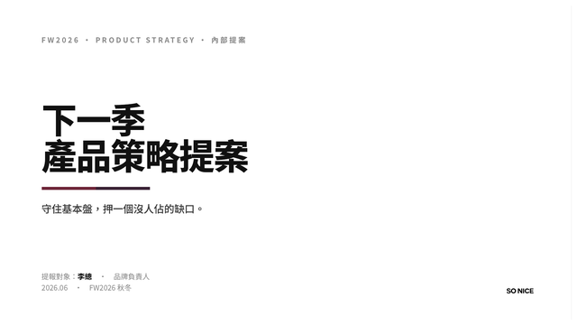
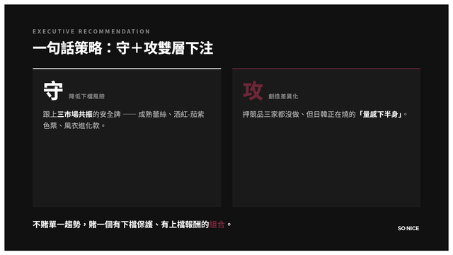
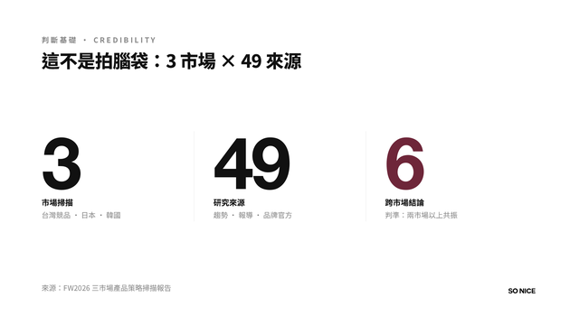
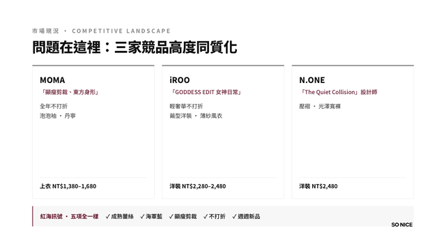
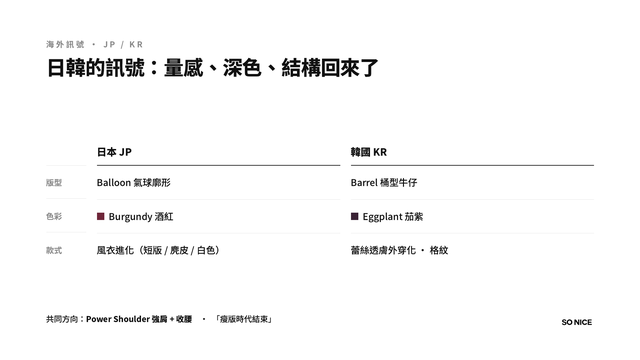
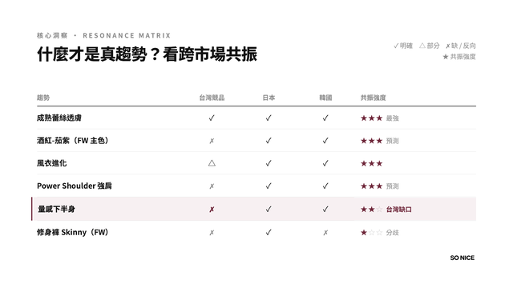
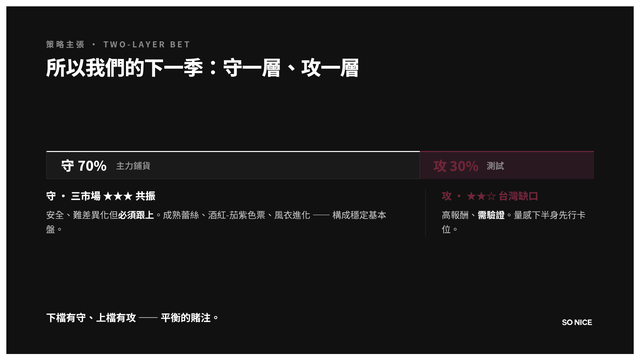
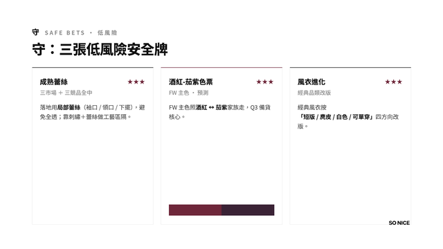
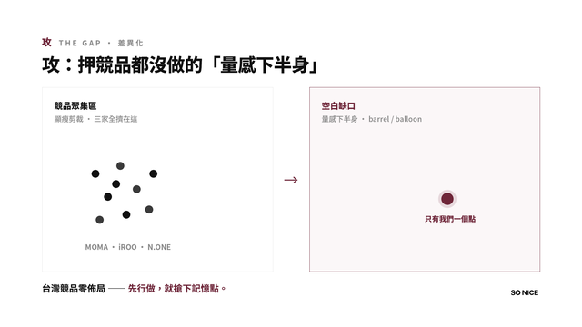
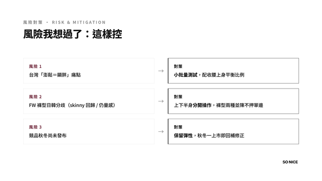
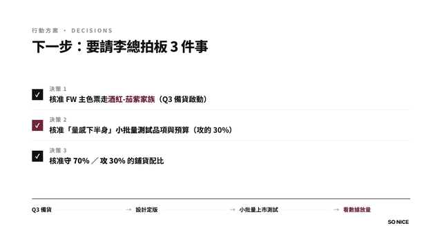
你寫的 prompt.md 餵進去 —— 11 頁、字級、配色、圖表全照你 prompt 裡寫的長出來。（品牌外觀下一段再升級）
28
BLOCK 2 · Claude Design · 生出的 deck
BLOCK 2 · design system好看 → 你的樣子
deck 生出來了 —— 但它還不是
「你的樣子」。
「你的樣子」。
剛剛那份的色，是你一行一行手寫進 prompt 的。下一步：把品牌存成一套規格 —— design system，往後每份 deck 自動套。
29
BLOCK 2 · design system
BLOCK 2 · design system好看 ≠ 你的品牌
好看還不夠 —— 要像「你公司」的樣子。
design system = 把「你的品牌長什麼樣」存成一套規格。Claude Design 生 deck 時讀它 → 整份自動 on-brand。建一次、全員用 —— 視覺版的共用資產（就像今天做的 skill）。
SN
logo
商標、放哪、留多少邊
配色
主色／底／強調色
AaAa
字型
標題粗黑、不用 serif
間距 · 版型
留白、一頁一重點
150
元件樣式
封面／大數字／卡片
下一頁：我幫 SO NICE 和 nice ioi 各建好一套 —— 你親手匯進去、套上你的 deck。
30
BLOCK 2 · design system · 是什麼
BLOCK 2 · 匯入我建好兩套 · 這樣匯
把兩套匯進 Claude Design —— 三步。
1
Design systems → Create design system
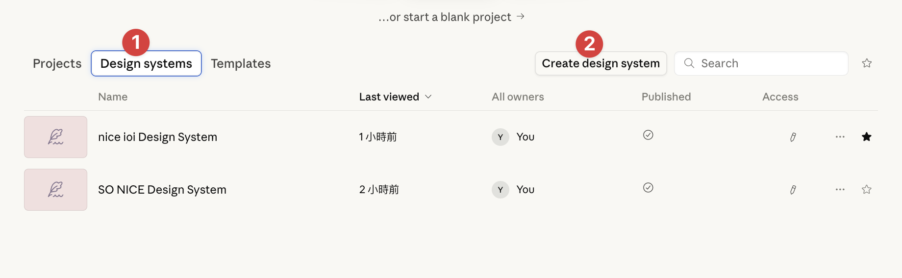
2
選 Create here

3
檔案拖進 Add fonts, logos and assets → Continue

SO NICE、nice ioi 兩套都這樣建一次 —— 下一頁下載檔案、開始動手。
31
BLOCK 2 · 匯入 · 三步截圖
BLOCK 2 · 動手兩套都建起來
換你 —— 兩套都建起來。
① 先下載這兩套（點一下就下載）
② 解壓 → 照上一頁三步（Create here → 檔案拖進 Add fonts, logos and assets）→ SO NICE、nice ioi 各建一次。picker 看到兩套，就成功了。
08:00
卡住沒關係 —— 兩套都出現在 picker 裡就夠。
32
BLOCK 2 · 動手 · 兩套都建 · 8 MIN
BLOCK 2 · 動手換 nice ioi 重生
換 nice ioi —— 同一份研究，重生一次。

deck 專案 → ＋ → Design system
1
回你的 deck 專案 → 點 ＋ → Design system → 選 nice ioi
2
在對話框貼這句、送出：
> 用新的 design system 重新調整投影片
3
同一份研究 → 整份 deck 變 nice ioi 的藕粉（沒重做、只換皮）
換你做：選 nice ioi → 叫它重新調整投影片 → 看 deck 從黑白變藕粉。
10:00
33
BLOCK 2 · 動手 · 換 nice ioi · 10 MIN
BLOCK 2 · Claude Design換個品牌、整份變
同一份研究 —— 換成 nice ioi 的藕粉。
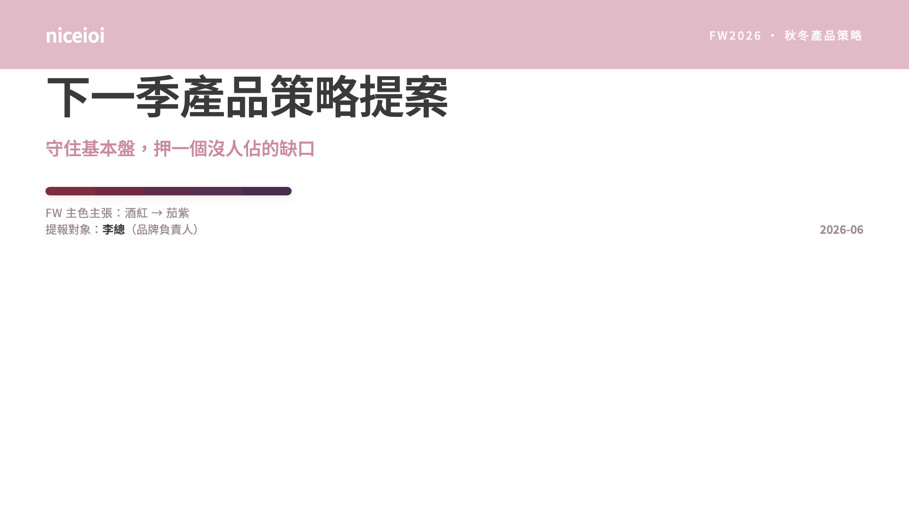
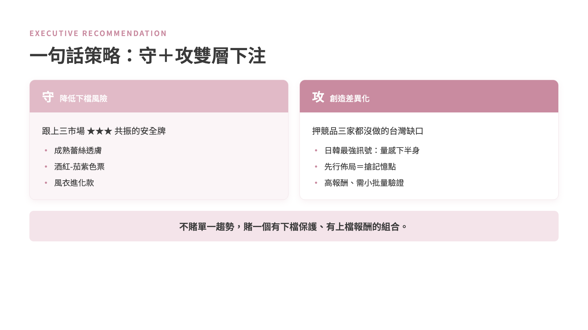
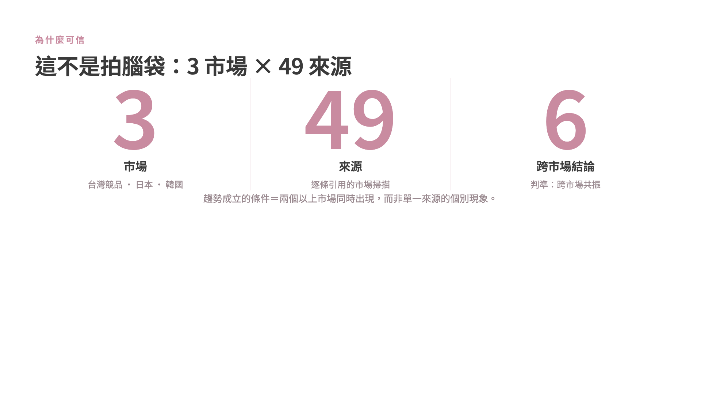
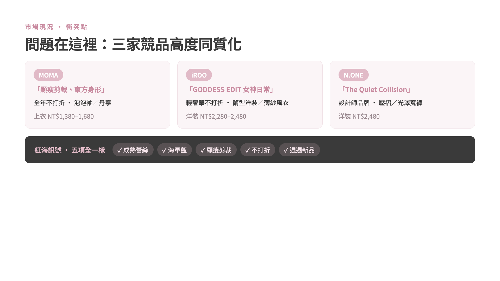
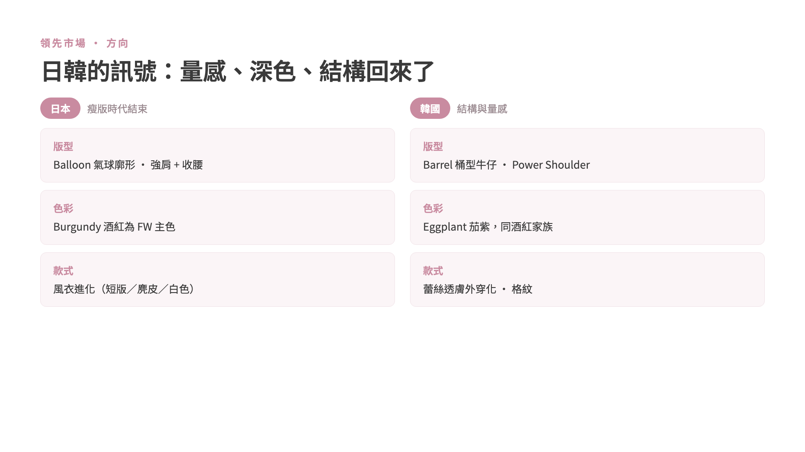
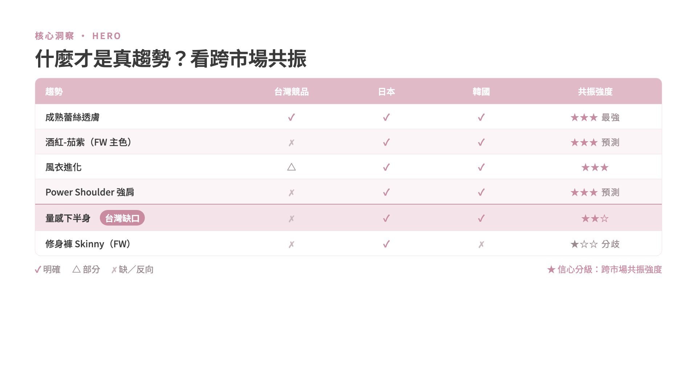
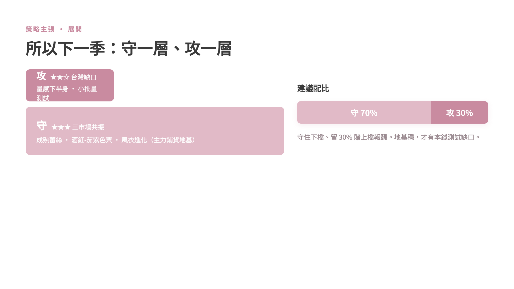
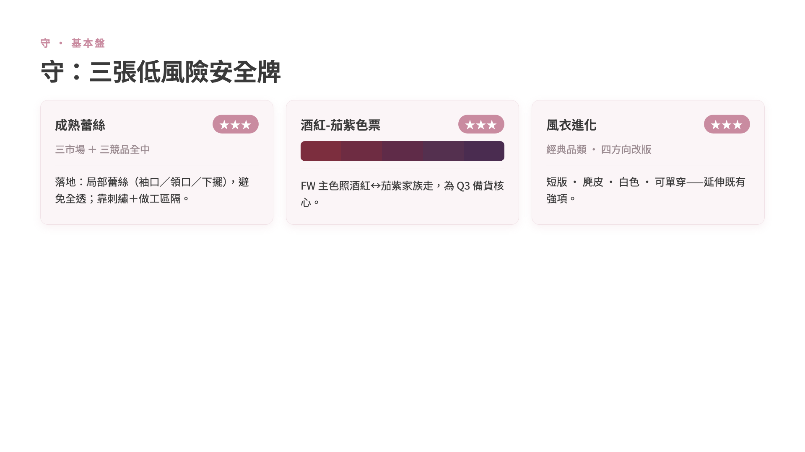
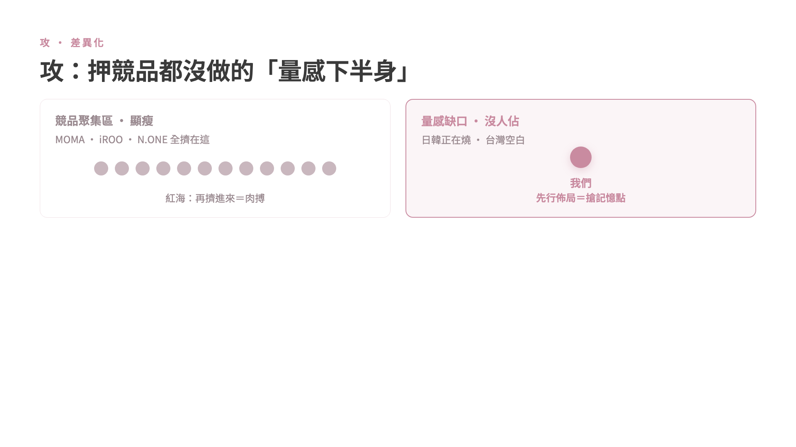
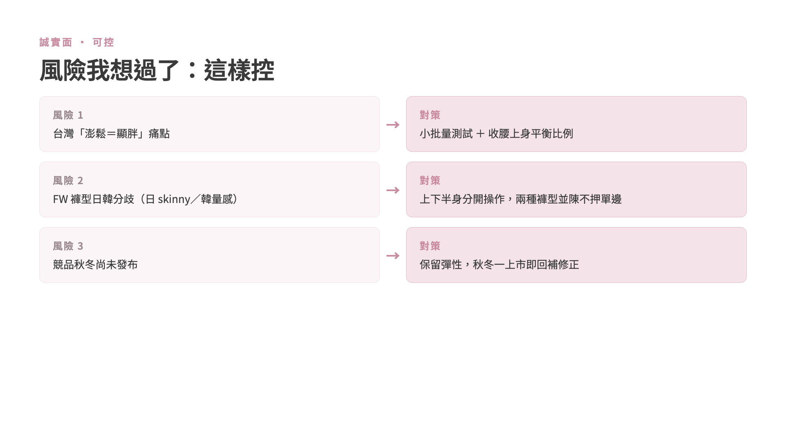
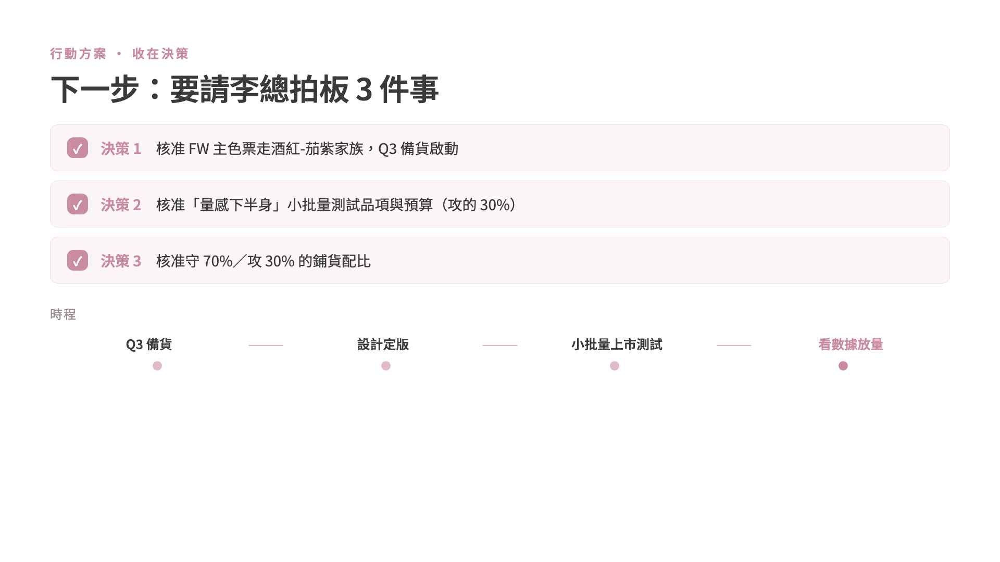
沒重做、只換 design system —— 11 頁從黑白極簡變藕粉柔和，內容一字沒改。
34
BLOCK 2 · 生出的 deck · nice ioi 版
BLOCK 2 · Claude Design想再調整 deck？
deck 好看、也 on-brand 了 ——
想再動手改呢？
想再動手改呢？
Claude Design 負責生；想精修 —— 換張圖、改句話、調個版 —— 把整份 deck 抓回 Claude Code，當成可編輯的檔案改。
35
BLOCK 2 · Claude Design
BLOCK 2 · Claude Design抓回來改
想再改？把 deck 抓回 Claude Code。
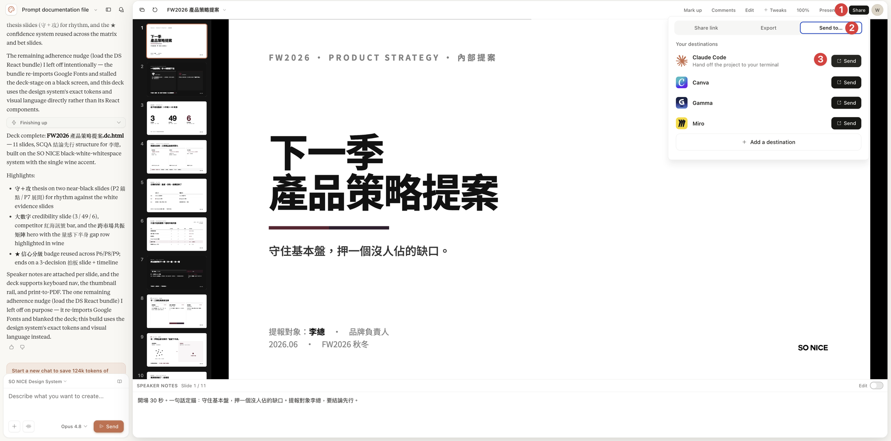
① 在 Claude Design
點右上 Send to → Claude Code
② 貼進 Claude Code
它給你一行指令 → 貼上、enter
③ 用程式精修
整份 deck 變可編輯檔案 → 叫 Claude 微調
36
BLOCK 2 · 抓回 Claude Code 改
BLOCK 2 · 動手抓回來改 · 10 MIN
換你 —— 把你的 deck 抓回來改一處。
1
在 Claude Design 按 Send to → Claude Code、複製它給的指令
2
貼進 Claude Code、enter → 它把整份 deck 抓成檔案
3
叫它上網抓一張相關的圖加到封面（下面照貼、{ } 換成你的）
> 上網找一張「{你的題目}」的官方產品圖／情境圖，下載、加到封面（放哪你決定、能在封面顯示就好）。找不到清楚的就換一張。改完跟我說圖放哪、動了哪個檔。
圖醜、要喊它換幾張都正常 —— 看到它真的上網抓圖、放進你的 deck，就成功了。
10:00
卡住沒關係 —— 看懂「能上網抓圖、放進 deck」就夠。
37
BLOCK 2 · 動手 · 抓回來改 · 10 MIN
BLOCK 2換你上台
抽一位 —— show 你的 deck。
30 秒就好：你做哪個品牌、Claude Design 幫你長出幾頁、你又改了哪一處。
38
BLOCK 2 · 抽一位 · show
BLOCK 2 · 回看兩種做 slide 的路
你現在會 兩種 做 slide 的路了。
想快 · 自己排
PowerPoint / Canva
原料
腦裡想講的內容
你做什麼
自己一頁一頁排版、找圖
產出
一份普通 deck
要正式 · 提案型
Claude Design
原料
一份研究（前面存的那份）
你做什麼
寫設計稿（prompt.md）
產出
整份提案 deck 自動長出
想快、自己刻幾頁就好；要正式提案、研究 → 設計稿、整份自動長出。
同一件事，你現在有兩隻手。
同一件事，你現在有兩隻手。
39
BLOCK 2 · 回看 · 兩種工作流
BREAK前半場完成 · 休息一下
研究、提案 deck —— AI 都幫你做完了。
休息 10 分鐘。
休息 10 分鐘。
BREAK
10:00
回來換你自己建 skill —— 從每天的開工，到每期最花時間的報表。
40
BREAK · 10 MIN → BLOCK 3
BLOCK 2 → BLOCK 3你一直在「叫」一個東西
你剛叫的 [研究]、[歸檔] ——
還有昨天的看行事曆、回信、開工。
還有昨天的看行事曆、回信、開工。
它們到底是什麼？ —— 都叫 Skill。今天，換你自己建。
41
BLOCK 3 · Skill 觀念
BLOCK 3 · Skill 觀念原來是個 Skill
你昨天叫的不是「Claude」——
是兩個 Skill 在背後做事
是兩個 Skill 在背後做事
你以為是 Claude 自己看行事曆、自己回信。
錯。
是兩個 Skill —— 看行事曆的 dws、收發信的 outlook-email。
你不用打 skill 名字 —— 只要說「看我這週行事曆」「幫我回這封信」，它自動接手。
.claude/
└── skills/
├── outlook-email/ ← 收發信（Outlook）
└── ...
42
BLOCK 3 · Skill 觀念 · 揭曉
BLOCK 3 · Skill 觀念skill 是什麼
Skill = 把你的工作流 ——
「教」給 Claude。
「教」給 Claude。
Claude 本身
通用助手 —— 什麼都會一點、但不知道你們公司怎麼做事。
像剛到職的 工讀生 —— 能力不差、
但你們的規矩要一條條教。
但你們的規矩要一條條教。
裝上 Skill
把「你的流程、標準、偏好」教進去 —— 它就照你的方式做。
像待了三年的 老手 ——
你說一句、他知道整套怎麼跑。
你說一句、他知道整套怎麼跑。
幫 Claude 裝一個 skill = 多一個 資深員工。 dws = 排行事曆的助理、outlook-email = 收發信的祕書。
43
BLOCK 3 · Skill 觀念 · 教給 Claude
BLOCK 3 · Skill 觀念skill 長什麼樣
一個 skill 長什麼樣
你的 vault/
└── .claude/skills/
└── outlook-email/
├── SKILL.md ← 主要指令（必要）
├── scripts/ ← 腳本（選用）
│ └── outlook_ops.ps1
└── references/ ← 參考（選用）
└── html-template.md
這是 outlook-email 真實的資料夾 —— 不是示意圖。
最少 —— 一個檔就是 skill
只有 SKILL.md 必要。scripts / references 是要用才加的選配 —— 很多 skill 就只有這一個檔。
就是一個資料夾
整包複製 / 壓縮，就能分享給同事 —— 丟進 .claude/skills/ 就生效。
下一頁打開 SKILL.md —— 看它裡面長什麼樣。
44
BLOCK 3 · Skill 觀念 · skill 結構
BLOCK 3 · Skill 觀念SKILL.md 實際長這樣
SKILL.md 裡面 —— 你 vault 真的有這個
---
name: outlook-email
description: 讀信、回信、草擬、轉寄、搜尋。
觸發詞：「查信」「看最近的信」
「幫我回這封信」「轉寄給...」…
---
# Outlook Email 工作流
## 安全規則
- 草稿優先：只存草稿、不自動寄出
- 不刪信：只標已讀
## 工作流程 — 回信
1. 讀信 2. 摘要 3. 討論怎麼回
4. 出草稿 5. 微調 6. 存草稿
封面（--- 之間的 YAML）
name + 觸發詞 —— Claude 靠這段判斷 要不要啟動。
本體（下面的 Markdown）
就是你的 SOP —— 規則 + 一步步流程。
上面 YAML 封面、下面 Markdown SOP —— 這是你 vault 裡真的有的一個 skill。
45
BLOCK 3 · Skill 觀念 · SKILL.md 實例
BLOCK 3 · Skill 觀念漸進式揭露
三層載入 —— 怎麼知道
用哪個 skill？
用哪個 skill？
skill 越裝越多 —— 全載進來會吃光 context + 注意力。所以開機只載「封面」，要用才一層層翻開：
$ claude
● 啟動 agent
● 載入 CLAUDE.md你的規則，開機就全載
● 掃描 skills · tools只讀名字 + 一句描述
outlook-email · dws · knowledge-keeper ＝ 封面（很輕）
> 你：幫我回這封信
● 比對描述 → 命中 outlook-email
● 載入 完整指令要用才翻開 ＝ 完整步驟
● 讀它的 scripts / 範本真需要才讀 ＝ 附加
這叫 漸進式揭露 —— 開機只看封面、要用才翻內層，其餘不佔空間。
46
BLOCK 3 · Skill 觀念 · 三層載入
BLOCK 3 · Skill 觀念為什麼值得
為什麼值得 做成 skill？
穩品質 ＋ 省力
同一件事 —— 今天這樣講、明天那樣講，做法就跑掉：多一步、漏一步、格式亂。每次還得重講一遍背景。
寫成 skill ＝ 標準化 SOP：品質穩、一句話觸發 —— 一次寫好、天天省。
省 Context Window ＋ 顧注意力
省 Context Window：skill 平常不佔位、用到才載入 —— 不塞爆 Claude 的工作記憶（Context Window）。
顧注意力：塞越多、它越抓不住重點；省下來 —— 注意力留給當下這件事。
一次寫好 —— 穩品質、省力、省 Context Window、又顧注意力。 正式名 Agent Skills · 開放標準
47
BLOCK 3 · Skill 觀念 · 為什麼值得
BLOCK 3 · Skill 觀念動手看 context
動手 —— 開個新的，打 /context
先開一個新的 Claude Code、再打 /context —— 才看得到「乾淨的起點」：還沒聊天時，系統 + CLAUDE.md + skill 各佔多少。
Context usage
claude-sonnet-4-6
範例 · 你的數字會不同
40.3k / 200.0k tokens（20%）
CATEGORYTOKENSUSAGE
System prompt 系統提示7.0k3.5%
System tools 內建工具12.4k6.2%
Custom agents 你的 agent2.2k1.1%
Memory files 你的 CLAUDE.md15.4k7.7%
Skills skill 封面3.1k1.5%
Messages 對話 · 開新的＝幾乎 00.1k<0.1%
Autocompact buffer 留給自動壓縮 · 不能拿來對話33.0k16.5%
Free space 扣掉 buffer · 真正能對話的126.7k63.4%
✍️ 記下你自己的 Free space ＝
k
200k 扣掉系統 ＋ ~33k buffer 後 · 真正能用的
48
BLOCK 3 · Skill 觀念 · 動手 /context
BLOCK 3 · 你已經有的 skill裝好的 vs 還在 CLAUDE.md
你手上 ——
已經有 skill 了。
已經有 skill 了。
剛剛 /context 裡的 Skills 那一行 —— 攤開來，就是這幾個。
EXPLORER · 你裝好的 skill ✓
▾ .claude
▾ skills
▸ outlook-email收發信
▸ knowledge-keeper查外部 / 歸檔 · 今天才上工
兩個資深員工 —— knowledge-keeper 今天才上工。
CLAUDE.md 裡 — 還不是 skill
§ 開工你 D1 跑過
§ 收工你 D1 跑過
§ 結算本週你 D1 跑過
寫成「流程」、住在 CLAUDE.md 裡。
裝好的 skill ✓ ｜ 跑過的流程（還不是 skill）—— 今天把它們抽出來、變真 skill。
49
BLOCK 3 · 你已經有的 skill
BLOCK 3 · 解構開工 對照 真 skill
「開工」對照真 skill ——
同一個形狀。
同一個形狀。
還記得 outlook-email 的 SKILL.md 嗎？把你天天喊的「開工」擺到它旁邊看。
✅ 已經是 skill住在 .claude/skills/
outlook-email/SKILL.md
---
name: outlook-email
觸發詞：「查信」「幫我回這封信」
---
## 工作流程 — 回信
1. 讀信 2. 摘要 3. 討論怎麼回
4. 出草稿 5. 微調 6. 存草稿
⚠️ 還不是 skill還住在 CLAUDE.md
CLAUDE.md —— ## 開工 這段
## 開工
觸發語：「開工」「規劃今天」「早安」
### 流程
1. 確認日期 + 檢查近況
2. 回顧 daily、盤點待辦
3. 對週目標、抓今天該做
4. 建立 daily note + 清單
兩邊都是 觸發語 ＋ 步驟 —— 同一個形狀，差別只在住哪。 今天把開工搬進 skills/ —— 就是 真 skill。
50
BLOCK 3 · 解構開工 → 接 B2
BLOCK 3 → BLOCK 4把 routine 抽成 skill
開工、收工、結算 —— 都在 CLAUDE.md。
今天 全抽成 skill。
今天 全抽成 skill。
同一招、抽 3 個。
51
BLOCK 4 · 升級 routines
BLOCK 4 · 升級 routines升級開工
升級開工 —— 變 skill、還加料
D1 開工 · 你跑過
只盤點任務
→
升級開工
+ 過去 24h 的信，挑出要回的
+ 今天＋明天行程
+ 盤點任務
+ 今天＋明天行程
+ 盤點任務
同一招抽成 skill —— 一段 prompt 講清楚 4 件事，它才做得穩
① 讀哪段
指明 ## 開工
讓它讀原文、別亂猜
讓它讀原文、別亂猜
② 存哪
.claude/skills/x/
只建一個 SKILL.md
只建一個 SKILL.md
③ 觸發語
寫進 description
Claude 才知道何時用
Claude 才知道何時用
④ 照原樣
body 照步驟寫
不要自己加減
不要自己加減
開工 / 收工 你 D1 跑過、結算還沒 —— 三個都用這 4 件事抽，下面三頁一段 prompt 照貼。
52
BLOCK 4 · 升級開工 + 穩定 prompt 四要素
BLOCK 4 · 動手 ①daily · 5 MIN
動手 ① —— 把 開工 變 skill + 加料
照貼這段給 Claude（Sonnet）
> 讀我 CLAUDE.md 裡「## 開工」那一整段，幫我做成一個叫「daily」的 skill，建在這個 vault 裡（不要存到全域）：
· 當我說「開工 / 規劃今天 / 早安」任一句，就自動啟動
· 步驟照「## 開工」原本寫的做，別漏也別改
· 在「盤點任務」前多加兩步：
① outlook-email（收發信 skill）抓過去 24h 信、挑要回的
② dws（行事曆 skill）看今天＋明天行程
· 建好後，「## 開工」原本那段換成一句「已做成 daily skill」，其它別動
做完跟我說：skill 存在哪、CLAUDE.md 改了哪裡。
daily
05:00
建置確認：它有回報 ① daily skill 建在哪、② 開工那段換成一句話了 嗎？
先別急著測 —— 等三個都建完、開個新的再一起驗。
先別急著測 —— 等三個都建完、開個新的再一起驗。
53
BLOCK 4 · 動手 ① daily · 5 MIN
BLOCK 4 · 動手 ②eod · 5 MIN
動手 ② —— 把 收工 變 skill
同一招 · 照貼這段（Sonnet）
> 讀我 CLAUDE.md 裡「## 收工」那一整段，做成一個叫「eod」的 skill，建在這個 vault 裡（不要存到全域）：
· 當我說「收工 / 回顧今天 / 下班了」任一句，就自動啟動
· 步驟照「## 收工」原本寫的做，別漏也別改
· 建好後，「## 收工」原本那段換成一句「已做成 eod skill」，其它別動
做完跟我說：skill 存在哪、CLAUDE.md 改了哪裡。
收工是開工的鏡像、更快 —— 同一個模板換一段。
eod
05:00
建置確認：① eod 建在哪、② 收工那段換成一句話了 嗎？兩個都有＝成了。
54
BLOCK 4 · 動手 ② eod · 5 MIN
BLOCK 4 · 動手 ③wam · 5 MIN
動手 ③ —— 把 結算本週 變 skill
一樣的模板 · 照貼這段（Sonnet）
> 讀我 CLAUDE.md 裡「## WAM」那一整段，做成一個叫「wam」的 skill，建在這個 vault 裡（不要存到全域）：
· 當我說「結算本週 / 週會 / 週末收尾 / lock 下週」任一句，就自動啟動
· 步驟照「## WAM」原本的 6 個步驟 做，別漏也別改
· 建好後，「## WAM」原本那段換成一句「已做成 wam skill」，其它別動
做完跟我說：skill 存在哪、CLAUDE.md 改了哪裡。
結算步驟最多（6 步）—— 讓它先讀一遍「## WAM」再做、別漏。
wam
05:00
建置確認：① wam 建在哪、② WAM 那段換成一句話了 嗎？
三個都自己做出來了 ✓ —— 開個新的，驗證它們真的接手。下一頁。
三個都自己做出來了 ✓ —— 開個新的，驗證它們真的接手。下一頁。
55
BLOCK 4 · 動手 ③ wam · 5 MIN
BLOCK 4 · 收尾開新的 · 驗三個 · 6 MIN
開個新的 —— 讓三個 skill 真的接手。
你剛把「開工 / 收工 / 結算」三段都換成一句話了 —— 每件事現在只剩 一個來源：skill。
先做這件事
開一個新的 Claude Code
（舊的不用關）
（舊的不用關）
06:00
在新的那個 · 各說一次 → 看它自己跑
說「開工」→ 有抓信、看今明行程、排今天
說「收工」→ 有照流程跑
說「結算本週」或「WAM」→ 它有跳出來、開始問本週？（認得就成了——今天週一，真結算留週五）
三個都喊得動 = 接上了 ✓ —— 對了，還有個 skill 你今天用過、卻沒發現。
為什麼要開新的：CLAUDE.md 是 Claude 一開機就讀進去記著的。你中途改了，這次開著的還記得舊版 —— 開個新的，它才讀到新版、skill 才真正接手。
56
BLOCK 4 · 開新的 · 三個 skill 接手
BLOCK 4 · 裝現成的你剛才用過的那個
你剛才下載的那套 design system ——
一直都是一個 skill。
一直都是一個 skill。
你在 Claude Design 用它讓 deck 變好看。它的 zip 裡其實有一個 SKILL.md —— 就是你剛學的那個格式。把它 接回 Claude Code（像你把 deck 抓回來那樣），你本地就多一位 品牌設計師。
57
BLOCK 4 · 裝現成的 · design system 是 skill
BLOCK 4 · 動手 ④裝現成的 · 不是自己做 · 5 MIN
動手 ④ —— 把品牌也裝成 skill。
這個不用自己做 · 照貼這段（Sonnet）
> 把我剛才下載的兩套 design system（在「下載」資料夾，sonice-design-system.zip、niceioi-design-system.zip）裝成 skill：
· 解壓 → 裝進這個 vault 的 .claude/skills/，資料夾名用 SKILL.md 的 name（sonice-design、niceioi-design）
· 每個 SKILL.md 補一句中文觸發語（之後說「做 SO NICE／nice ioi 視覺」就叫得動，免打斜線）
· 裝好把原本的 zip 刪掉
· CLAUDE.md 最後加一段「## 品牌 Design System」，以後做視覺先用對應品牌 skill
回報：裝了哪兩套、放哪、CLAUDE.md 加了什麼，並提醒我重開。
找不到就先說、別亂猜 —— 是你剛才 deck 那頁下載的同兩個檔。
品牌 skill
05:00
建置確認：① 兩套進 .claude/skills、② CLAUDE.md 加了品牌段、③ 重開後 picker 看到兩個。三個都有＝成了。
58
BLOCK 4 · 動手 ④ · 裝品牌 skill · 5 MIN
BLOCK 4 · 驗收品牌 skill 上工 · 5 MIN
換你 —— 用剛裝的 sonice-design，把投影片換成 SO NICE。
你前面從 Claude Design 抓回 Claude Code 的那份藕粉投影片 —— 現在用剛裝的 skill，一句話換品牌。
在 Claude Code 照貼這段
> 用 sonice-design 這個 skill，把我抓回 Claude Code 的那份投影片，重新套成 SO NICE 品牌 —— 色、字、版型照 skill 規格調。
看它做什麼
· 讀 sonice-design 的規格
· 不重做 —— 只換皮
· 藕粉 → SO NICE 黑
· 讀 sonice-design 的規格
· 不重做 —— 只換皮
· 藕粉 → SO NICE 黑
05:00
投影片變 SO NICE 黑 = 本地品牌設計師上工了。
同一件事 —— 前面在 Claude Design 線上做過；現在裝了 skill，本地 Code 一句話就成，不用回線上。
59
BLOCK 4 · 驗收 · 品牌 skill 重套 deck
BLOCK 4 · 收尾你的 skill 團隊
現在 —— 你有 8 個 skill。
內建 · 3
outlook-email收發信
dws行事曆
knowledge-keeper知識庫
＋
今天你做的 · +3
daily開工 + 信 + 行程
eod收工
wam結算本週
＋
今天你裝的 · +2
sonice-designSO NICE 品牌
niceioi-designnice ioi 品牌
不跑腿 —— 做東西時幫你把關品牌。
8 個 skill —— 有的喊一聲幫你 跑（開工 / 收工 / 回信 / 排程），有的在旁邊幫你 把關（知識、品牌）。
60
BLOCK 4 · 收尾 · 你的 skill 團隊
BLOCK 4 · 收尾最後一道大事
小事搞定 —— 換最花時間的大事。
開工 / 收工 / 結算 都變 skill 了 ✓ —— 那是每天的小事。今天最花時間的三件大事 —— 前兩件你前面做完了 ✓，最後剩一件 ——
▶ 最後一道 · 數據報表
每期一堆數字 —— 整併、算、比去年、出成報告。
接下來就做 ▶ 禮嘉 的商品 YOY 報表
✓ 研究 ＋ 提案 deck · 前面做過
查競品趨勢 → 重點進知識庫；再讓研究長成 on-brand 提案 deck。
[研究] ＋ [歸檔] ＋ Claude Design 做過了 ✓
最後一道 —— 把每期最花時間的「報表」，親手做成 skill。
61
BLOCK 4 · 收尾 · 主菜預告
BLOCK 4 → BLOCK 5數據報表 skill
禮嘉 每個月都要生出這份商品 YOY 報表。
只是每一次，都得從頭手工拉一輪。
只是每一次，都得從頭手工拉一輪。
標新舊款、歸主分類、拉樞紐、比去年、再寫一段觀察 —— 今天把這一整套，做成 skill、一句話重跑。
62
BLOCK 5 · 數據報表 skill
BLOCK 5 · 數據報表 skill正向講不清，就以終為始
把它變成一個 skill —— 不用教它每一步
① 想要的 每月一句話，自動生出商品 YOY 報表 ＋ 觀察分析。
② 輸入 · 商品銷售報表（本期＋去年同期，共兩份）
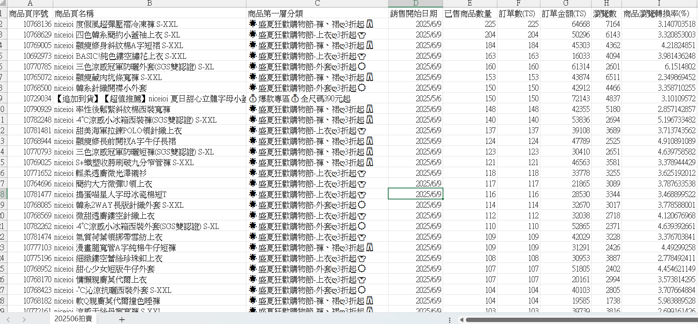
→
④ 輸出 · 你手做的 YOY（紅字＝你的判斷）
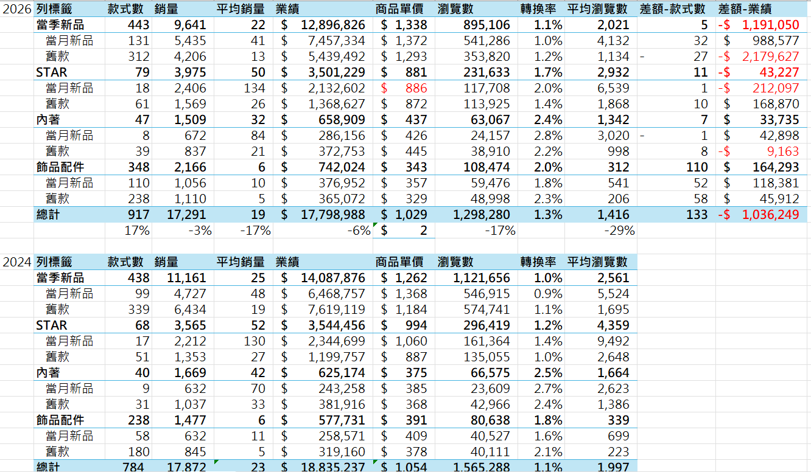
② 定義 · 產品分類對照
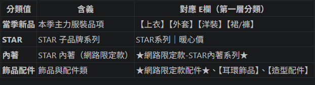
③ Claude 要做的
1 加新舊款＋商品分類欄位 2 製作 YOY 比較報表
規則：上架日如有變動，以指令為主 · 做對：所有商品都要分到類
規則：上架日如有變動，以指令為主 · 做對：所有商品都要分到類
② 輸入、④ 輸出 你都給得出來 —— 只有 ③「怎麼分類、怎麼判新舊款」正向講不全。以終為始：給它你的輸出，讓它反推 ③、人再補規則。
63
BLOCK 5 · 以終為始
BLOCK 5 · 數據報表 skill先做對、再做好看
做 skill 分兩段 —— 先做對、再收成
① 先把內容做對 ← 接下來先做這個
理解→
對帳→
觀察
把數字算對、逐欄跟你的樞紐對到 0 差；規則猜不到就舉手問你。最後補一段觀察（像「款增 17% 但業績 −6%」）。
→
② 再排好、收成 skill 內容對了再談
排版→
固化
套起手式版型排成漂亮報表；寫成 SKILL.md ＋ 觸發語。下次丟兩份檔、一句話就重跑。
一段一段來 —— 先把內容做對（3 步），再排好、收成 skill（2 步）。
64
BLOCK 5 · 兩個階段
BLOCK 5 · 數據報表 skill照貼這段（先別算）
做這個 skill，第一步 —— 先讓它看懂怎麼算
1理解2對帳3觀察4排版5固化
動手前 —— 兩份商品銷售報表（本期 + 去年）＋ 定義說明丟進 inbox，你手做的 YOY 樞紐截圖（目標長相）直接貼進對話。
> 兩份報表（本期 + 去年）＋ 定義說明放在 inbox，我手做的 YOY 樞紐當『目標長相』也貼進來了 —— 先讀進來。
先看懂報表怎麼長成那個 YOY：主分類怎麼歸、新舊款怎麼分、指標公式。
把步驟講給我聽，標出要我補規則的地方。先別算、也先別建 skill。
這一步在做什麼
· 給它【兩份報表 ＋ 目標樞紐截圖】
· 讓它反推你怎麼算出來的
· 只講步驟、先別算
· 讓它反推你怎麼算出來的
· 只講步驟、先別算
65
BLOCK 5 · 理解
BLOCK 5 · 數據報表 skill它自己推、推不到問你
它反推你的算法 —— 對得上自己跑、規則猜不到問你
1理解2對帳3觀察4排版5固化
它能算出來的（都在這兩份檔）
款式數、銷量、平均銷量
業績、商品單價
瀏覽數、轉換率、平均瀏覽
以上每一項的 YoY 差額
✓ 數字 → 它自己算、逐欄對帳
款式數、銷量、業績、單價、瀏覽、轉換、YoY
✗ 規則 → 猜不到、它問你
新舊款怎麼切（上架日門檻）
主分類怎麼歸 · 業績含不含退貨
主分類怎麼歸 · 業績含不含退貨
照貼這段 · 實際算 + 對帳
> 用兩份檔實際算一次，跟我手做的樞紐對帳：款式 / 銷量 / 業績 / 瀏覽 對不對得上？對不上講差在哪，別硬湊。
66
BLOCK 5 · 反推 · 對帳
BLOCK 5 · 數據報表 skill樞紐寫不出來的那一段
數字對了 —— 再加一段樞紐寫不出來的觀察
1理解2對帳3觀察4排版5固化
> 數字都對上了。加一段觀察分析：挑 3-5 個值得注意的點，異常標紅。
用線上營運看得懂的話、不要空泛。
它會自己挑出來、幫你標紅
款式數 +17%，業績卻 −6% —— 款增了業績沒跟上
平均瀏覽 −29% —— 曝光掉最兇
轉換率 1.1% vs 2.4% —— 品類差很大
算的部分，Excel 樞紐就會 —— skill 的價值，在它每月自動把這段觀察寫好、排好版、一句話重跑。只要表，就退回樞紐。
67
BLOCK 5 · 加觀察分析
BLOCK 5 · 數據報表 skill數字穩了，再排版
數字對了 —— 一段話把報告的版面做出來
1理解2對帳3觀察4排版5固化
> 我下載了 yoy-report-template.html（共用風格範本）。參考它的風格，把算好的數字＋觀察排成報表 —— 抓風格就好、不用照抄。
一起調到滿意，再存成 skill 自己的版型：assets/yoy-report-template.html。
它套一版
→
你看
→
說哪裡改
↻
直到 OK
→
存版型
68
BLOCK 5 · 輸出格式
BLOCK 5 · 數據報表 skill補上最後一塊
最後一塊 —— 補 SKILL.md，skill 就完整
1理解2對帳3觀察4排版5固化
> 版型存好了。把步驟＋規則（主分類對照、新舊款門檻、指標公式）寫成 SKILL.md、
觸發語設「跑商品 YOY 報表」，跟 assets/ 的版型組成 skill。
product-yoy-report/
├─ SKILL.md 剛寫的
└─ assets/
└─ yoy-report-template.html 29 存的
做對一次 → 之後每個月，說一句「跑商品 YOY 報表」＋ 丟新的兩份檔。
69
BLOCK 5 · 固化成 skill
BLOCK 5 · 數據報表 skill動手前先問一句
不是每份報表 —— 都能用手上的檔做出來
禮嘉 · 做得出來
兩份檔裡，每一欄都算得出來 —— 反推、對帳、固化，一路到底。
完整自足 —— 不用外接任何資料。
Elaine FB 週報 · 一半做不出來
報告 2/3 的數字不在那幾個檔裡 —— 收益、轉單、流量要 GA / 91APP 才有。
還有陷阱：同一份報表的「收益」有三個數字 —— 名字一樣、底數不同層。
動手前先讓它 把邏輯講清楚、跟你談到有共識 —— 哪些算得出、哪些缺、哪些有陷阱，講明白了，再動手建 skill。
70
BLOCK 5 · 對照 · 先判斷能不能做
BLOCK 5 · 換你動手自己建一個 skill · 20 MIN
換你的報表 —— 自己建一個 skill
你在 Miro 上規劃的那個 skill —— 把板上的【②輸入兩份檔 ＋ ④你手做的目標截圖】丟進來，照站牌走一遍。
理解→
對帳→
觀察→
排版→
固化
20 分鐘目標
至少讓它反推＋對帳到數字對得上。排版、固化用風格範本很快，或下課 / 回家收尾。
至少讓它反推＋對帳到數字對得上。排版、固化用風格範本很快，或下課 / 回家收尾。
先開個新的 Claude Code
20:00
做你自己的那一份 —— 這個 skill，才是今天真正帶得走的東西。
71
BLOCK 5 · 換你的報表
BLOCK 5 · 收尾今天你升級了什麼
一天 —— 三個升級。
01
競品 / 趨勢查完，進你的知識庫
[研究] 查、[歸檔] 拆成卡進 Atlas —— 越查越聰明、半年後還調得回來。
02
研究自己長成提案 deck
一份研究 → Claude Design 直接生整份 on-brand 提案。
03
你親手建了一個 Skill —— 數據報表
把「多份原始檔 → 整併、解讀、出主管報表」整套流程包成 Skill —— 以後一句話自己重跑。
D1 學會叫它做事 —— 今天學會自己建 Skill，把最花時間的事變成「一句話自己跑」。
72
BLOCK 5 · 收尾 · 三個升級
BLOCK 5 · 回家作業D3 前 · 挑想練的試
回家 —— 把今天的招練熟。
作業 ① · skill
優化你的 skill、再自己建幾個
今天那個 skill 拿去真的用、不順就改；再挑工作上的重複動作，自己建第二、第三個。
估時 · 60 min
作業 ② · 研究
跑 [研究] 一個題目 → 進 Atlas
你真的想查的競品或趨勢 —— 查完 [歸檔] 進你的知識庫。
估時 · 10 min
作業 ③ · deck
用 Claude Design 把 ② 變一份 deck
研究 → 提案，整條 pipeline 走一遍。
估時 · 15 min
明天就 D3 —— 今晚挑想練的試，明天開場抽幾位分享。三件剛好今天三個升級各練一次。
73
BLOCK 5 · 回家作業 · 3 件
BLOCK 5 · 真實收工收工 · 3 MIN
下班前 —— 先跑「收工」收今天。
喊「收工」
→ 收工 skill 跑今天的回顧
· 今天完成了什麼
· 學到 / 卡住什麼
· 明天 D3 從哪接
D1 學過「收工」—— 今天第一次真的拿來收 D2。
03:00
74
BLOCK 5 · 真實收工 · 收工 eod · 3 MIN
D2 · 完成明天 D3
今天你把工具 變成自己的。
明天 D3 —— 變成 部門的。
明天 D3 —— 變成 部門的。
D3：用講的讓 AI 幫你寫程式、做出別人打開就能用的工具 —— 調轉貨地圖、達成儀表板、採購小工具。
75
D2 完成 · 明天 D3 見